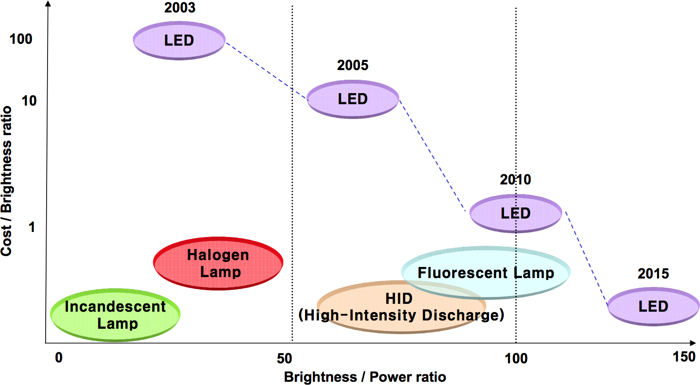
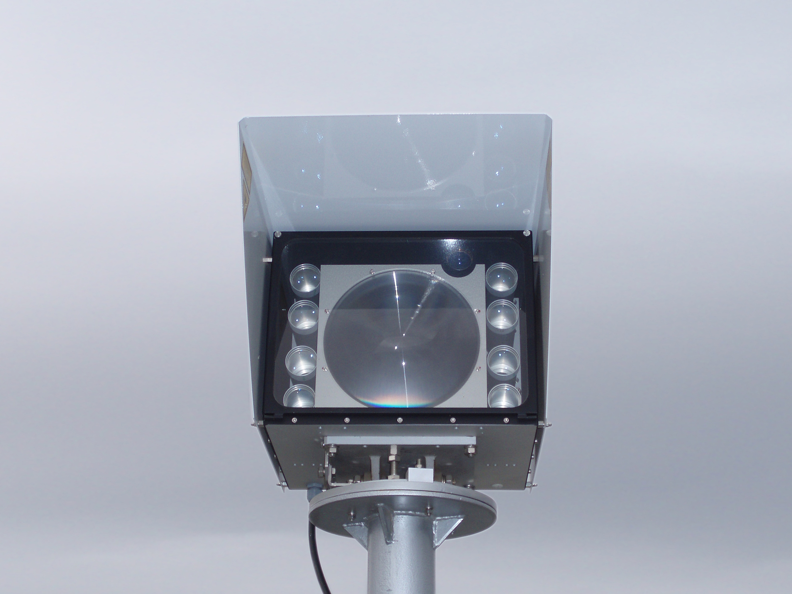
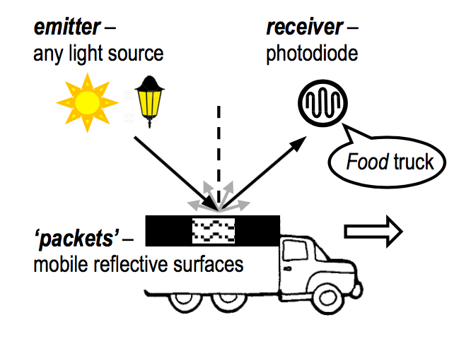

Intéressons nous de plus prêt aux émetteurs et récepteurs utilisés dans la communication par lumière visible.
Les émetteurs
Il y a principalement deux types d’émetteurs “actifs” : la LED et le LASER. Il existe des composants plus exotiques dont je ne parlerais pas ici, mais aussi des émetteurs “passifs”.
La LED
Probablement le composant le plus utilisé lorsqu’il s’agit de faire de la communication par lumière visible. Ce composant présente de nombreux avantages:
- comme le montre la courbe ci dessous, le ratio coût/luminosité est vraiment bon et se rapproche des lampes à incandescence bon marcher. Mais surtout, les LED sont peu consommatrices d’énergie. Cela est très intéressant pour toutes les applications IoT pour la contrainte de coût et de consommation est forte
- de plus les LEDs ont des fréquences de coupure assez élevés ce qui permet d’avoir de bonnes vitesses de commutations afin d’obtenir de bon débits
- finalement, du fait même que la LED soit de plus en plus utilisée (phares de voitures, éclairage public, éclairage des bâtiments, …) permet une multiplication des applications en utilisant les LEDs déjà présentes

Les LEDS classiques à bas coûts ont tout de même des fréquences de coupure de l’ordre de 10MHz à 50MHz, ce qui permet d’obtenir des débits correctes pour de nombreuses applications. De nombreuses recherches se font pour obtenir des LEDS pouvant fonctionner à beaucoup plus haute fréquence. La technologie de LED haute fréquence la plus utilisée actuellement est à base d’arséniure de Gallium (GaAs, semi conducteur III-V) qui permet d’obtenir une fréquence de coupure supérieure à 100GHz.
Le LASER
Le LASER, bien que plus coûteux que la LED, a l’avantage de permettre des communications à plus grande distance du fait de la faible dispersion de son émission lumineuse. L’utilisation du LASER est donc plus adapté aux communications à plus longue distances, principalement entre infrastructures.
Par exemple, ci dessous un Laser permettant un débit de 1Gbits/s à une distance de 2 km entre bâtiments.

Les LASER sont également utilisés pour des communications très haut débits entres satellites (voir European Data Relay Satellite).
Les émetteurs passifs
Il existe également des techniques dites “passives”. En fait, c’est la modulation de la lumière qui va être passive.
Un exemple d’application est présenté dans l’article “Passive Communication with Ambient Light”. Un camion va être équipé d’une surface contenant plusieurs matériaux réfléchissant. La photodiode va récupérer le signal réfléchi par le camion qui va donc être modulé. Grâce à cette technique, il est possible de transmettre une information sur le camion par exemple.

Les récepteurs
Il existe de nombreux récepteurs: les photo diodes, les photo transistors, les photo multiplicateurs, les photo résistances, … Chaque récepteur a des avantages et des inconvénients, je vous invite à consulter l’article “Choosing the Detector for your Unique Light Sensing Application” pour en savoir plus sur le sujet. Dans le cas de la réception du signal par un smartphone, j’ai écrit un article dédié sur le sujet.